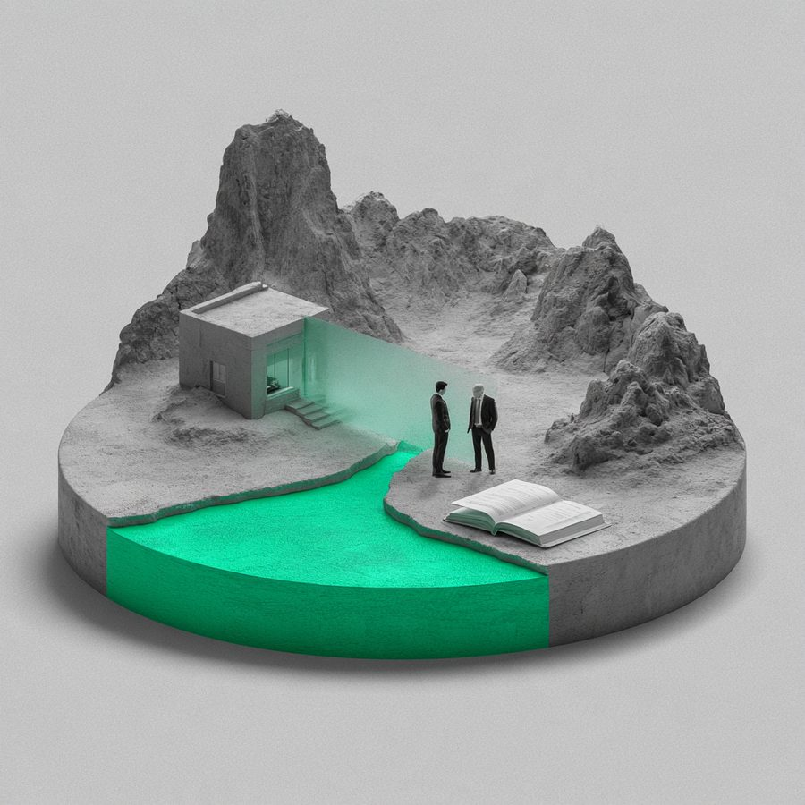

동업계약 탈퇴에 따른 출입금지가처분 신청 인용
의뢰인 A는 상대방 B와 헬스장을 동업하여 운영하기로 하여 5년째 운영하고 있었으나, 헬스장 운영과 관련하여 다툼이 발생하였고, 급기야 B는 A를 폭행하는 사건이 발생하였습니다. 법원은 폭행 경위 등을 고려할 때, B는 명확히 탈퇴의 의사표시를 한 것이며, 그 이후의 정산의 문제가 남을 뿐이라는 취지로 A의 주장을 모두 인용하였습니다.

계약・사업 · 금전피해
—
가처분 신청 인용
사건 개요
의뢰인 A는 상대방 B와 헬스장을 동업하여 운영하기로 하여 5년째 운영하고 있었으나, 헬스장 운영과 관련하여 다툼이 발생하였고, 급기야 B는 A를 폭행하는 사건이 발생하였습니다. 이러한 폭행 사건 이후에, A는 향후 체육관 동업 운영에 관하여 문의를 하였고, B는 탈퇴하겠다는 의사를 표시하면서, 위 체육관 관련 채무를 A가 모두 떠앉고, 추가로 B에게 6,000만원을 지급해달라는 의사표시를 하였습니다. A는 B가 동업 탈퇴의 의사표시를 하였음에도 불구하고, 지속적으로 체육관을 방문하여 개인 크로스핏을 하는 등 업무를 방해하고 있다고 주장하면서, 체육관의 출입을 금지하는 가처분신청을 하였습니다.
핵심 쟁점
이 사건의 쟁점은, B가 탈퇴하겠다는 의사표시가 조건부 의사표시인지 아니면, 일단 탈퇴의 의사표시가 인정되고 정산에 관한 의견을 표시한 것인지입니다. 만약, 조건부 의사표시라고 한다면, 그 조건이 성취되지 않은 경우 탈퇴 의사표시의 효력이 발생하지 않아, B가 탈퇴한 것이 아니게 되고, 그 경우 B는 여전히 동업자로서 이 사건 체육관에 출입이 가능하기 때문입니다.
본 변호사의 전략 변호사 김용석
일단, 동업이 탈퇴나 해지 등으로 소위 동업관계가 파기되는 경우에, 상대방이 탈퇴를 한 것인지, 아니면 동업 관계의 상대방과의 신뢰관계가 깨지는 등의 사유로 해지를 한 것인지 여부에 대하여 명확히 하여야 합니다. 이에, 본 변호사는 A와 B사이의 카카오톡 메시지, 폭행사건이 발생하게 된 경위 등에 관하여 구체적으로 설명하면서, 폭행 사건 이후에 B가 자신의 잘못을 인정하고 탈퇴의 의사표시를 하였다는 취지의 주장 및 입증을 하였습니다. 그리고, B가 요구한 채무 및 재산의 분배에 관한 주장은 정산에 관한 합의의 내용이라는 취지일 뿐, 탈퇴의 조건은 아니었다는 점을 주장, 입증하였습니다.
결과 및 판단
법원은 폭행 경위 등을 고려할 때, B는 명확히 탈퇴의 의사표시를 한 것이며, 그 이후의 정산의 문제가 남을 뿐이라는 취지로 A의 주장을 모두 인용하였습니다. 위 결정에 따라 B는 더이상 이 사건 체육관에 출입할 수 없게 되었습니다.
법률 인사이트
동업관계는 서로의 신뢰가 기초가 되지 않는 이상 유지될 수 없습니다. 민법 및 대법원의 판례에서도 서로의 신뢰가 상실되는 경우에는 동업계약을 해지할 수 있다고 규정하거나 판시한 바 있습니다. 동업을 하면서 신뢰가 상실되는 등의 어떠한 사유로 동업관계를 더 이상 유지할 수 없을 때에는, 동업관계가 2인 이상인지 아니면 3인 이상인지에 따라 정산관계(사업체의 소유, 자산분재) 등이 문제가 될 수 있습니다. 특히, 1인이 사업체를 소유하기로 합의를 하거나 법적으로 1인 소유의 사업체로 인정됨에도 불구하고, 다른 동업자가 자신이 정산을 받지 못하였다고 주장하면서, 영업을 방해하는 경우가 종종 발생하는데, 이때에는 출입금지가처분 및 간접강제신청(출입할 때마다 상당한 금원을 지급하라는 취지입니다)을 통하여 상대방의 출입을 금지할 수 있는 절차가 있습니다.